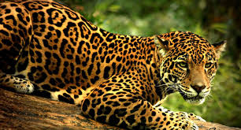

El jaguar, yaguar o yaguareté (Panthera onca) es un carnívoro félido de la subfamilia de los Panterinos y género Panthera. Es la única de las cinco especies actuales de este género que se encuentra en América. También es el mayor félido de América y el tercero del mundo, después del tigre (Panthera tigris) y el león (Panthera leo). Su distribución actual se extiende desde el extremo sur de Estados Unidos continuando por gran parte de América Central y América del Sur hasta el norte y noreste de Argentina. Habita principalmente en zonas tropicales secas y húmedas, pero también vive en matorrales áridos. Su dieta es muy amplia, puede cazar animales grandes incluyendo ganado hasta muy pequeños.
.
Exceptuando algunas poblaciones en Arizona (suroeste de Tucson), esta especie ya ha sido prácticamente extirpada en los Estados Unidos desde principios de la década de 1900.
Se encuentra emparentado y se asemeja mucho en apariencia física al leopardo (Panthera pardus), pero generalmente es de mayor tamaño, cuenta con una constitución más robusta y su comportamiento y hábitat son más acordes a los del tigre (Panthera tigris). Si bien prefiere las selvas densas y húmedas, puede acomodarse a una gran variedad de terrenos boscosos o abiertos. Está estrechamente asociado a la presencia de agua y destaca, junto con el tigre, por ser un félido al que le gusta nadar.
Es fundamentalmente solitario. Caza tendiendo emboscadas, siendo oportunista a la hora de elegir las presas. Es una especie clave para la estabilización de los ecosistemas en los que habita; al ser un superpredador, regula las poblaciones de las especies que captura. Los ejemplares adultos tienen una mordedura excepcionalmente potente, incluso en comparación con otros grandes félidos, lo que les permite perforar los caparazones de reptiles acorazados como las tortugas y utilizar un método poco habitual para matar: ataca directamente la cabeza de la presa entre las orejas para propinar un mordisco letal que atraviesa el cráneo con sus colmillos alcanzando al cerebro.

LISTA ROJA
Panthera onca está calificado en la Lista Roja de la UICN como «especie casi amenazada» y su número está en declive. Entre los factores que lo amenazan se incluyen la pérdida y la fragmentación de su hábitat. A pesar de que el comercio internacional de ejemplares de esta especie o sus partes está prohibido, este félido muere con frecuencia a mano de los humanos, especialmente en conflictos con ganaderos. Aunque reducida, su distribución geográfica continúa siendo amplia. A lo largo de la historia, esta distribución le ha otorgado un lugar prominente en la mitología de numerosas culturas indígenas americanas, como los mayas y los aztecas.
Un aspecto más favorable fue que la probabilidad de supervivencia a largo plazo fue considerada elevada en un 70 % de la distribución actual, especialmente en la cuenca del Amazonas y las regiones adyacentes del Gran Chaco y el Pantanal.
NOMBRES COMUNES Y ETIMOLOGIA
Estado poblacional
Las poblaciones de este gran félido se encuentran actualmente en declive. El animal está catalogado como especie casi amenazada por la Unión Internacional para la Conservación de la Naturaleza (UICN), lo que quiere decir que podría estar amenazado de extinción en un futuro próximo. La pérdida de parte de su ámbito de distribución, incluida su práctica eliminación de sus áreas históricas en el norte, así como la creciente fragmentación de las zonas restantes, ha contribuido a su estatus actual. Durante los años 1960 hubo un declive especialmente significativo, con más de 15 000 pieles de esta especie extraídas de la Amazonia brasileña cada año; gracias a la Convención sobre el Comercio Internacional de Especies de Fauna y Flora Salvaje Amenazadas (CITES) de 1973, se produjo una drástica disminución del comercio de pieles. Un estudio detallado que se realizó bajo los auspicios de la Wildlife Conservation Society (WCS) reveló que ha perdido el 37 % de su distribución histórica y se desconoce su situación en un 17 % adicional. Un aspecto más favorable fue que la probabilidad de supervivencia a largo plazo fue considerada elevada en un 70 % de la distribución actual, especialmente en la cuenca del Amazonas y las regiones adyacentes del Gran Chaco y el Pantanal.
AMENAZAS

Entre sus principales amenazas se encuentran la deforestación de su hábitat y ecosistema, un creciente incremento de la competencia por la comida con los humanos, la caza furtiva, los huracanes en la parte septentrional de su distribución y los enfrentamientos con los ganaderos, que a menudo los matan en las zonas donde cazan ganado pues, cuando se adapta a la presa, se ha comprobado que caza ganado bovino como parte importante de su dieta; sin embargo, mientras que la deforestación para crear zonas de pasto es un problema para la especie, su población podría haber aumentado tras la introducción de ganado bovino en América del Sur al aprovecharse los félidos de esta nueva fuente de presas. Esta tendencia a cazar ganado ha llevado a los propietarios de ranchos a contratar cazadores especializados a tiempo completo.
Los principales problemas de conservación del jaguar tienen su origen en las actividades humanas que generan un enorme impacto directo e indirecto en sus poblaciones. Entre las amenazas más importantes para su conservación están la pérdida y fragmentación de hábitat. El jaguar es una especie de gran tamaño y de amplia distribución, que requiere de grandes extensiones para mantener poblaciones viables. En este sentido, las áreas naturales protegidas son fundamentales para su conservación. Sin embargo, pocas áreas protegidas tienen la superficie adecuada para mantener una población viable de jaguar a largo plazo, por lo que es imprescindible contar con corredores u otras formas de manejo del paisaje adyacente. Por lo tanto, los esfuerzos para la protección del jaguar requieren de la consolidación de las áreas naturales protegidas ya existentes, de la creación de nuevas reservas y de la conservación del jaguar en las grandes áreas no protegidas en las que se encuentra todavía a la especie, lo que representa uno de los factores críticos dentro de los esquemas de su conservación. En Latinoamérica como en México, la depredación de animales domesticos, en especial bovinos, causada por félidos silvestres, tiene como consecuencia acciones de control letal por parte de ganaderos y criadores. Este control se lleva a cabo incluso dentro de áreas protegidas, aún en ausencia de casos de depredación en la zona.
ACCIONES PARA SU CONSERVACION
El jaguar es considerado, por su relevancia ecológica y social, como una especie prioritaria para la conservación en México de acuerdo a la normatividad en materia ambiental. La Ley General de Vida Silvestre establece que las especies prioritarias para la conservación son aquellas que determina la autoridad y que merecen atención especial por sus características, como ser especies clave, emblemáticas, carismáticas y factibles de recuperación. Además el jaguar se encuentra incluido en la norma mexicana de especies en peligro (NOM.059 ECOL 2001) y su cacería está vedada en el Diario Oficial de la Federación desde 1987. En los últimos años se ha avanzado mucho en materia de conservación del jaguar en México.